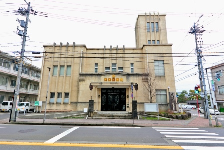

れ ： 歴史ある 昭和の面影 公会堂
一言でいうと？
昭和初期の面影を残す駅近のミニ博物館

武生駅前近くに建つ記念館。
1階では越前市の歴史や人物などを、期間を区切り内容を変えながら展示。2階では越前市の歴史や文化を紹介するために年4回の企画展をしています。
また公会堂の貴賓室を忠実に復元し建設当初の雰囲気(ふんいき)を今に伝えています。
歴史は？
取り壊しの危機があった⁉
昭和4年に開館し、武生の文化や行政の中心でありランドマークであった公会堂。
平成に入るとその老朽化により使用を停止し、取り壊しが検討されましたが、多くの市民らの要望で建物は保存。平成7年に現在の姿になりました。昭和初期の面影を残す建物として17年に国の有形文化財に登録されました。
現在は博物館施設として利用されています。
お問い合わせ
0778-21-3900
住所 ≫ 越前市蓮菜町8-8
営業時間 ≫ 10：00～18：00(入館は17：30まで)
定休日 ≫ 月曜日・年末年始
電話 ≫ 0778-21-3900
玄関のつくりがとてもおしゃれな建物です。中は外観と比べるときれいですが、明るすぎない室内が雰囲気づくりに役立っています。２階は特に昭和初期の面影が残る部屋があるので注目です。